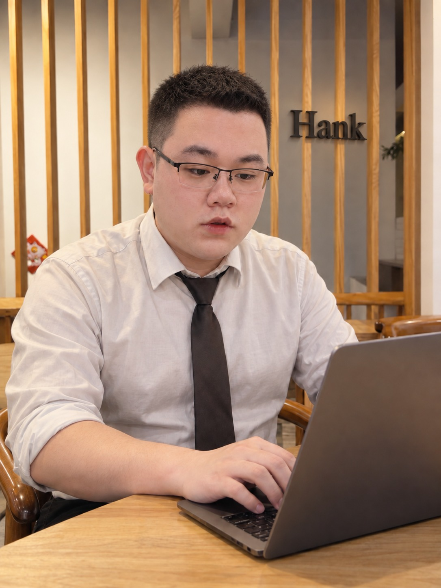

以剪輯建立敘事
透過素材取捨、段落安排與聲畫銜接，整理故事脈絡，掌握資訊與情緒的呈現節奏。

從真實旅程到想像中的場景，結合攝影、剪輯與 AI 動畫，讓故事有畫面，也有節奏。
透過素材取捨、段落安排與聲畫銜接，整理故事脈絡，掌握資訊與情緒的呈現節奏。
熱愛拍攝與攝影，關注光線、構圖、人物和環境的關係，從日常觀察累積影像創作靈感。
喜歡研究動畫生成，將場景與分鏡概念轉化為影像素材，再以剪輯組織成連貫的敘事。
六支精選影像作品
26 歲，擁有 7 年影視剪輯經驗，製作領域涵蓋旅遊頻道、政府標案影像及 AI 動畫。曾擔任多間行銷公司的影視部門主管，具備影像製作、專案協作與團隊統籌經驗。
熱愛攝影、拍攝與影像剪輯，也喜歡研究 AI 動畫生成。平時透過觀影與追劇觀察角色、鏡頭與敘事節奏，將對影劇的興趣轉化為製作時的細節判斷。
曾於多間行銷公司擔任影視部門主管，統籌影音製作、協調工作分配與製作進度，串接企劃、拍攝及後期流程。
參與旅遊內容剪輯，整理旅途素材與場景脈絡，結合人物、環境與聲音，呈現具有觀看節奏的旅遊敘事。
參與政府標案相關影片剪輯，依專案需求整合資訊與影像素材，完成內容編排、後期調整及成片交付。
具 AI 動畫與影視相關製作經驗，結合影像生成、分鏡概念與後期剪輯，處理畫面銜接、視覺風格與敘事節奏。
影視製作
結合剪輯實務與影視部門統籌經驗，在創作、溝通與執行之間，讓製作流程有方向，讓成片回應專案需求。